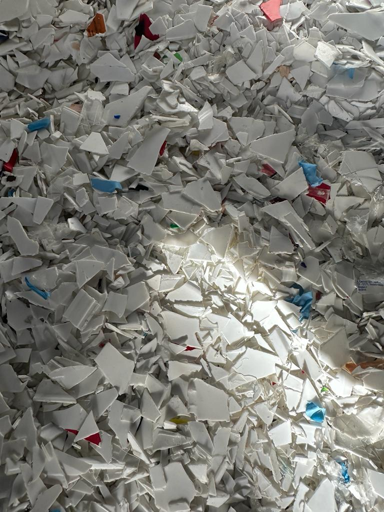
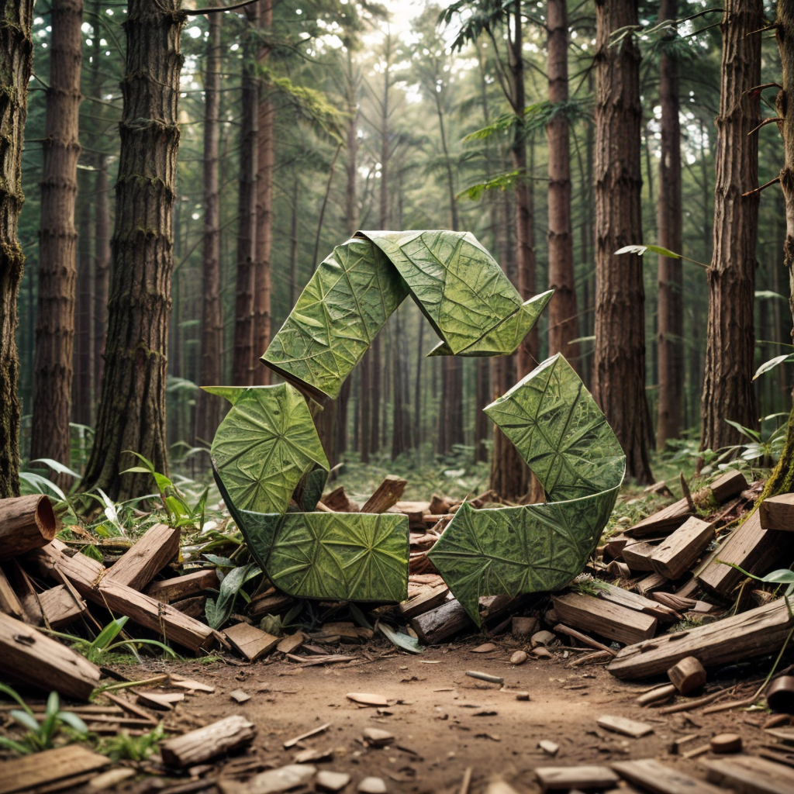
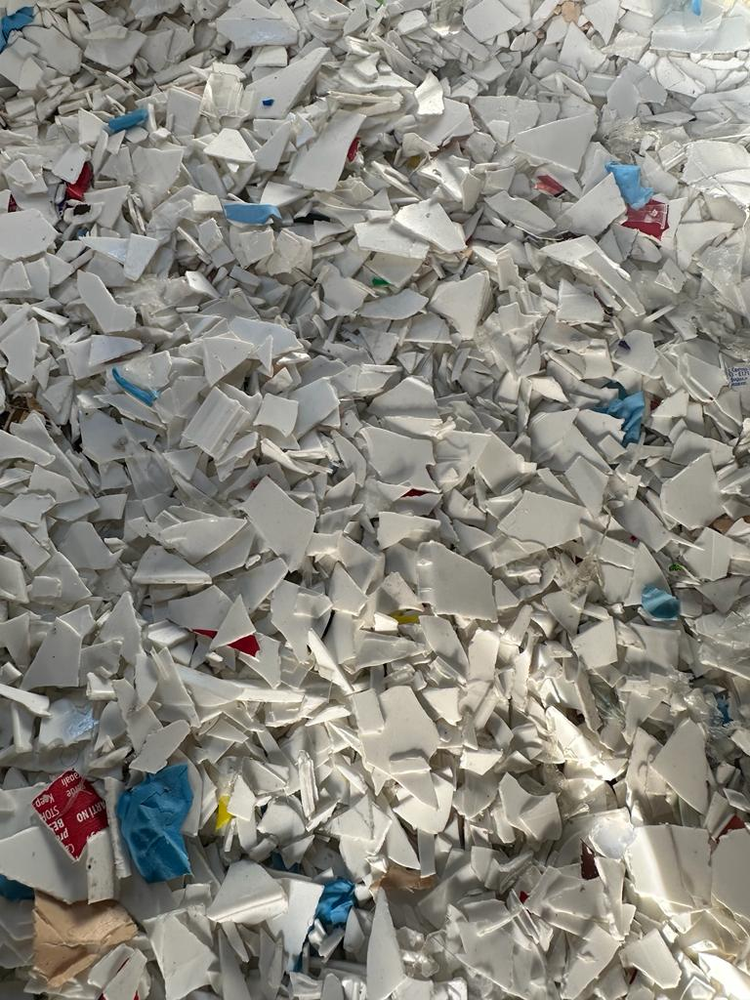
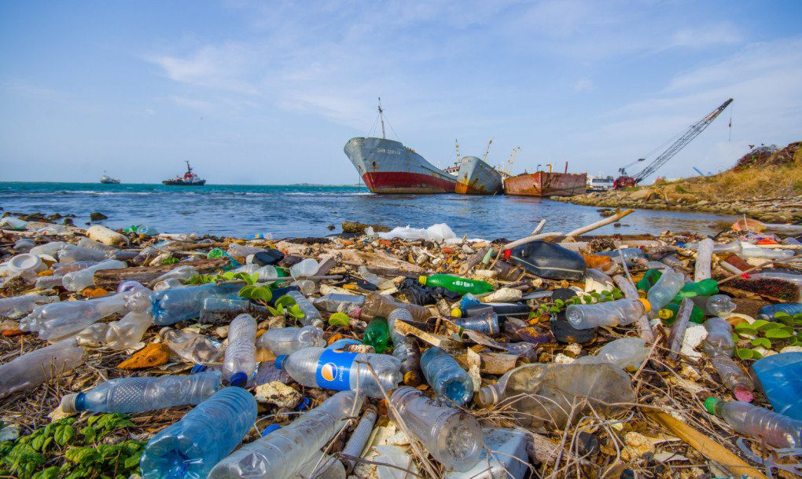

HAKKIMIZDA
KONUMUMUZ
İŞ SAATLERİMİZ



Dünyamızın sürdürülebilir bir geleceğe ihtiyacı var ve biz bu geleceği birlikte inşa etmek için buradayız. [Yolbaşı Geri Dönüşüm], geri dönüşüm alanında öncü bir firma olarak, atık yönetimi ve çevre dostu uygulamalarla kaynaklarımızı korumayı hedefliyoruz.
Neden Geri Dönüşüm ?
Geri dönüşüm, doğal kaynakların korunmasına ve çevre kirliliğinin azaltılmasına yardımcı olur. Her yıl tonlarca atık, geri dönüşüm süreçleriyle yeniden kullanıma kazandırılabilir. Bu, hem ekonomiye katkı sağlar hem de doğaya duyduğumuz sorumluluğu yerine getirir.
Hizmetlerimiz
Atık Toplama: Evlerden, işyerlerinden ve endüstriyel tesislerden geri dönüşüm malzemelerini profesyonel ekiplerimizle topluyoruz.
Sınıflandırma ve İşleme: Toplanan atıkları, en uygun yöntemlerle ayrıştırarak yeniden değerlendiriyoruz.
Sürdürülebilir Bir Gelecek İçin Bizimle Olun!
Geri dönüşüm, yalnızca bir iş değil, aynı zamanda bir yaşam biçimidir. Siz de bu sürecin bir parçası olun; atıklarınızı geri dönüştürerek doğaya olan katkınızı artırın. Daha fazla bilgi için bizimle iletişime geçin veya hizmetlerimizi keşfedin.

-1920x1080.png)
Aldığımız Plastik Çeşitleri
- HDPE Yüksek Yoğunluklu Polietilen
- PET Polietilen tereftalat
- PP Polipropilen
İLETİŞİM
İNSTAGRAM ADRESİ